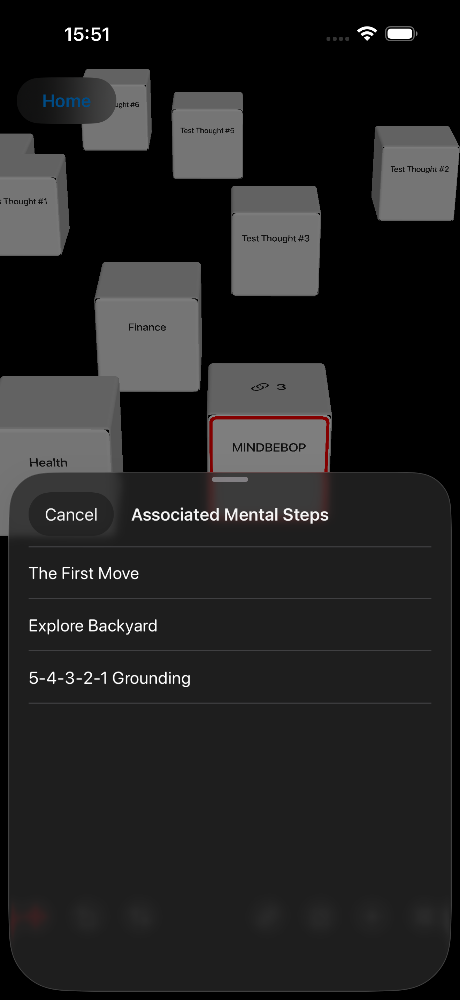

생각이 저마다 자리를 가질 수 있고, 가능한 경로를 열어 둘 수 있으며, 그 생각에서 출발해 언제 어디로 나아갈지, 아니면 나아가지 않을지를 스스로 결정할 수 있는 공간입니다.
다른 일을 하는 동안에도 생각은 Mental Background를 떠다닐 수 있습니다.
어떤 생각은 그대로 지나갑니다.
어떤 생각은 계속해서 되돌아옵니다.
때로는 생각과의 관계를 바꾸는 것만으로 충분할 수 있습니다.
그 생각을 다른 관점에서 바라볼 수 있습니다.
잠시 한쪽에 내려놓을 수도 있습니다.
그 생각에 주의를 덜 기울일 수도 있습니다.
경계를 만들 수도 있습니다.
또는 주의가 다른 곳으로 이동할 수 있도록 할 수도 있습니다.
그러면 그 생각이 가라앉을 수도 있습니다.
하지만 때로는 여전히 남아 있습니다.
생각 공간은 생각을 해결하거나, 정리하거나, 할 일로 바꾸도록 요구하지 않으면서도 그 생각이 존재할 수 있는 자리를 마련해 줍니다.
그리고 언젠가 그 생각에서 출발해 가고 싶은 곳이 있다는 사실을 발견한다면, 그곳을 향한 경로를 시작할 수 있습니다.
생각에는 목적지가 생기기 전부터
자리가 있을 수 있습니다.


MINDBEBOP의 많은 부분은 말로 표현할 수 있는 생각에서 시작됩니다.
하나의 문장.
걱정거리.
기억해 두어야 할 것.
아이디어.
스스로에게 계속 되풀이하는 말.
주의를 다른 곳에 기울여야 할 때 불쑥 떠오르는 생각.
이러한 언어적 생각들은 MINDBEBOP이 Mental Background라고 부르는 영역을 떠다닐 수 있습니다.
MINDBEBOP은 Mental Background에 있는 모든 생각이 중요하다고 가정하지 않습니다.
또한 반복해서 떠오르는 모든 생각이 의미 없는 잡음이라고 가정하지도 않습니다.
생각마다 적절한 관계 맺기 방식이 다를 수 있습니다.
어떤 생각은 Thought Noise처럼 작용할 수 있습니다.
반복해서 떠오르기도 합니다.
하던 일을 방해하기도 합니다.
실제 중요성에 비해 지나치게 크게 느껴지기도 합니다.
또는 그저 신경 쓰지 않고 내버려 두기가 어려울 수도 있습니다.
MINDBEBOP의 여러 도구는 이러한 생각과의 관계를 바꿀 수 있는 서로 다른 방법을 제공합니다.
MindFlipOut
반복해서 떠오르는 생각을 다른 관점에서 바라봅니다.
MindShoutOut
지금 당장 마음에 담아 둘 필요가 없는 생각을 잠시 내려놓습니다.
MindZoneOut
과부하가 걸린 마음에 조용한 시간을 마련해 줍니다.
MindBackOut
선택한 앱과 어느 정도 거리를 둡니다.
MindBackyard
주의가 움직일 수 있는 여유 공간을 마련합니다.
때로는 이렇게 관계를 바꾸는 것만으로 충분할 수 있습니다.
생각이 가라앉습니다.
더 이상 아무것도 할 필요가 없습니다.
하지만 때로는 생각이 여전히 남아 있습니다.
여기에서 MINDBEBOP이 탐구하고 있는 하나의 질문이 생깁니다.
생각과의 관계를 바꾸는 것만으로 충분하지 않다면,
그 생각에서 출발해 우리가 나아가고 싶은 곳이 여전히 있을 수도 있지 않을까요?
이것은 하나의 가설입니다.
MINDBEBOP은 계속 남아 있는 모든 생각에 숨겨진 목표나 목적지가 있다고 가정하지 않습니다.
생각 공간은 이를 알아볼 수 있는 장소를 제공합니다.
Mental Shelving은 어떤 것을 의식적으로 마음속에서 잠시 내려놓아, 당장 주의를 기울이지 않아도 되도록 하는 방식입니다.
그 생각이 반드시 해결된 것은 아닙니다.
반드시 잊어버린 것도 아닙니다.
나중에 다시 돌아올 수 있도록 남겨 두면서, 지금은 잠시 그 생각에서 벗어날 수 있도록 스스로 허용하는 것입니다.
생각 공간은 이러한 행위를 공간적인 것으로 만듭니다.
생각
↓
생각 블록
↓
생각 공간 안에 자리를 마련하기
↓
그 자리에 놓아두기
↓
원할 때 다시 돌아오기
우리는 이것을 공간적 멘탈 셸빙(Spatial Mental Shelving)이라고 부릅니다.
여기서 'Shelving'은 실제 선반이나 화면에 그려진 선반을 의미하지 않습니다.
무언가를 마음속에서 잠시 내려놓는 행위 자체를 의미합니다.
생각 공간은 그 행위에 눈에 보이고 지속적으로 유지되는 공간 속의 자리를 부여합니다.
생각 블록은 그 공간의 어딘가에 그저 존재하기만 해도 됩니다.
선반 모양의 물체는 필요하지 않습니다.
카테고리도 필요하지 않습니다.
우선순위도 필요하지 않습니다.
마감일도 필요하지 않습니다.
어떤 행동도 필요하지 않습니다.
생각에 자리를 마련해 주세요.
잃어버리지 않으면서
잠시 내려놓으세요.
대부분의 디지털 시스템은 생각을 정보로 바꿉니다.
생각
↓
텍스트
↓
목록 항목
생각 공간은 또 다른 표현 방식을 탐구합니다.
생각
↓
생각 블록
↓
장소
생각 블록은 생각이 공간 안에서 지속적으로 눈에 보이는 형태로 존재할 수 있게 합니다.
생각 블록은 그 안에 자체적인 중첩 생각 공간을 포함할 수도 있으며, 다른 생각들이 그 안에 존재하도록 할 수 있습니다.
블록을 움직일 수 있습니다.
블록 주위를 이동할 수 있습니다.
블록을 회전시킬 수 있습니다.
크기를 바꿀 수 있습니다.
가까이 다가갈 수 있습니다.
더 멀리 떨어질 수 있습니다.
어딘가에 놓아둘 수 있습니다.
나중에 다시 돌아올 수 있습니다.
또는 그냥 그대로 내버려 둘 수도 있습니다.
생각이 보인다고 해서 반드시 그 생각을 다뤄야 하는 것은 아닙니다.
다음 두 가지에는 차이가 있습니다.
이걸 계속 기억하고 있어야 해.
그리고:
그게 어디에 있는지 알아.
공간적 멘탈 셸빙은 생각에 지속적인 자리를 마련해 주는 것이 두 번째와 같은 감각을 형성하는 데 도움이 될 수 있는지 탐구합니다.
생각은 언제든 다시 떠올릴 수 있는 상태로 남아 있습니다.
하지만 언제든 다시 돌아올 수 있다는 것이 그 생각을 계속 의식의 전면에 두어야 한다는 뜻은 아닙니다.
대부분의 소프트웨어는 정보를 사용자의 주의 앞으로 가져옵니다.
이것을 보세요.
이것을 기억하세요.
이것에 응답하세요.
다음에는 이것을 하세요.
생각 공간에서는 이러한 관계를 반대로 바꿀 수 있습니다.
생각 블록은 원래 있던 자리에 그대로 머물러 있어도 됩니다.
그 생각에 다가갈지 말지는 스스로 결정합니다.
생각이 나를 방해하는 것이 아닙니다.
내가 그 생각에 다가가기로 선택하는 것입니다.
그 생각이 있는 곳까지 가서 잠시 머물러도 됩니다.
블록을 움직여도 됩니다.
그 생각에 대해 새로운 무언가를 발견할 수도 있습니다.
또는 몸을 돌려 그 생각을 그 자리에 남겨 둔 채 떠나도 됩니다.
다가갈지 말지를 결정하는 것은 바로 자신입니다.
대부분의 정보 시스템은 입력한 내용을 곧바로 분류하도록 요구합니다.
어떤 카테고리인가요?
어떤 프로젝트인가요?
우선순위는 무엇인가요?
마감일은 언제인가요?
생각 공간에서는 더 기본적인 질문에서 시작할 수 있습니다.
이것을 어디에 두고 싶을까?
그것만으로 충분할 수도 있습니다.
정리하기 전에 먼저 자리를 정할 수 있습니다.
또는 아예 정리할 필요가 없을 수도 있습니다.
목록은 보통 순서, 이름표, 카테고리를 통해 관계를 표현합니다.
공간은 배치를 통해 관계를 표현할 수 있습니다.
어떤 생각은 가까이에 있을 수 있습니다.
다른 생각은 더 멀리 있을 수 있습니다.
두 생각을 서로 가까이 놓을 수도 있습니다.
어떤 것은 시야에 바로 들어오는 곳에 둘 수 있습니다.
다른 것은 마주칠 가능성이 적은 곳에 놓아둘 수 있습니다.
생각 공간은 이러한 위치에 모두에게 공통으로 적용되는 의미를 부여할 필요가 없습니다.
가깝다고 해서 반드시 더 중요한 것은 아닙니다.
멀리 있다고 해서 반드시 덜 중요한 것도 아닙니다.
작다고 해서 반드시 의미가 작은 것도 아닙니다.
특정한 회전 각도가 반드시 특정한 종류의 생각을 뜻할 필요도 없습니다.
그 배치는 단지 생각들이 자신의 주변에 어떤 모습으로 존재하기를 원하는지를 반영할 수 있습니다.
마음속에 있는 것을 항상 정식으로 검토할 필요는 없습니다.
생각 공간을 이동하는 동안 우연히 생각과 마주칠 수도 있습니다.
아, 이게 아직 여기 있구나.
지금은 이게 다르게 보이네.
이 두 가지는 서로 연결되어 있을지도 몰라.
이건 아직 다루고 싶지 않아.
어쩌면 여기서 나아가고 싶은 곳이 있을지도 몰라.
그리고 계속 이동하면 됩니다.
마주치는 모든 생각을 처리해야 할 필요는 없습니다.
생각 공간은 생각을 확인하는 경험을 받은편지함의 항목을 하나씩 검토하는 일보다는, 어떤 환경 속에서 여러 대상과 마주치는 경험에 더 가깝게 만들 수 있습니다.
생각 블록은 목표와 같은 것이 아닙니다.
또한 Mental Destination과 같은 것도 아닙니다.
다음과 같은 이름의 생각 블록이 있다고 가정해 보겠습니다.
가족
가족은 목적지가 아닙니다.
하지만 그 생각에서 여러 가지 가능한 방향이 나타날 수 있습니다.
가족
↙ ↓ ↘
방해받지 않고 가족과 함께하는 시간 늘리기
경제적으로 더 많은 여유 만들기
집에서 더 인내심 있게 대하기
이러한 방향들은 동시에 존재할 수 있습니다.
각각이 중요해지는 시점은 다를 수 있습니다.
각각에 필요한 시간의 규모도 다를 수 있습니다.
결국 서로 다른 Mental Destination으로 이어질 수도 있습니다.
또는 어느 것도 Mental Navigation으로 발전하지 않을 수도 있습니다.
따라서 생각 블록에 하나의 고정된 방향 벡터가 있을 필요는 없습니다.
하나의 생각 블록은
여러 방향으로 나아갈 수 있는 출발점이 될 수 있습니다.
생각 공간은 하나의 생각에 여러 가능한 경로를 연결해 둘 수 있는 구체적인 방법을 제공합니다.
생각 블록에는 MindEntry에 저장된 Mental Steps를 연결할 수 있습니다.
하나의 생각 블록에 한 세트의 Mental Steps를 연결할 수 있습니다.
또는 여러 세트를 연결할 수도 있습니다.
생각 블록
↓
Mental Steps
Mental Steps
Mental Steps
Mental Steps를 연결하면 생각 블록에 작은 연결 표시가 나타납니다.
표시된 숫자는 연결된 Mental Steps가 몇 세트 있는지를 나타냅니다.
그 표시를 탭하면 해당 생각에 연결된 Mental Steps 목록을 볼 수 있습니다.
하나를 선택하면 MindEntry에서 열리며, 그곳에서 Mental Steps를 시작할 수 있습니다.
생각과 마주하기
↓
가능한 경로 살펴보기
↓
원할 때 하나 선택하기
↓
MindEntry에서 Mental Steps 시작하기
생각 블록은 여전히 하나의 생각으로 남습니다.
연결된 Mental Steps는 가능한 경로로 남습니다.
그중 하나를 따라갈지는 스스로 결정합니다.


기존 Mental Steps를 연결하는 것만이 유일한 방법은 아닙니다.
때로는 생각 블록과 마주했을 때, 현재 자신이 하고 싶은 일에 맞는 경로가 하나도 없다는 것을 깨닫게 됩니다.
또는 그 생각에 대한 Mental Steps를 아직 만들지 않았을 수도 있습니다.
생각 공간은 새로운 Mental Steps를 만드는 출발점이 될 수도 있습니다.
처음부터 완성된 계획을 준비할 필요는 없습니다. 생각과 상호작용하는 과정에서 가능한 Mental Destination을 발견할 수 있습니다.
그곳에서부터 MindEntry의 Mental Steps를 통해 움직이기 시작할 수 있습니다.
생각 블록
↓
무엇을 할 수 있을지 탐색하기
↓
Mental Destination 선택하기
↓
Mental Steps 만들기
↓
Mental Navigation 시작하기
여기서도 중요한 구분은 그대로 유지됩니다.
생각 블록이 자동으로 할 일이 되는 것은 아닙니다.
그 생각과의 상호작용을 실제 행동으로 이어갈지는 스스로 결정합니다.
공간적 멘탈 셸빙은 생각에 자리를 마련해 줍니다.
하지만 생각에 자리가 생기면 또 다른 질문이 가능해집니다.
생각과 마주하는 방식을 바꾸기 위해
어떤 구조를 만들 수 있을까요?
MINDBEBOP은 이러한 구조를 생각 가구(Thought Furniture)라고 부릅니다.
생각 가구는 단순히 생각 공간을 장식하는 물건이 아닙니다.
생각과 상호작용하는 특정한 방식을 설계하기 위한 것입니다.
생각 가구는 생각을 자세히 살펴보거나, 관점을 바꾸거나, 가능한 방향을 탐색하거나, 다른 방식으로 생각과 상호작용하는 데 도움을 줄 수 있습니다.
워크벤치(Workbench)가 그 첫 번째 구체적인 예입니다.
어떤 생각은 우리를 무언가로부터 보호하려는 것처럼 보입니다.
실패를 예상할 수도 있습니다.
거절당하는 것.
무언가를 잃는 것.
창피를 당하는 것.
또는 피하고 싶은 다른 결과를 예상할 수도 있습니다.
MINDBEBOP은 이러한 생각을 두려움에 기반한 보호적 생각(Fear-based Protective Thoughts)이라고 부릅니다.
예를 들면 다음과 같습니다.
실패하면 어떡하지?
이 생각은 반복해서 떠오를 수 있습니다.
주의를 방해할 수도 있습니다.
다른 관점에서 바라보거나 잠시 내려놓으려고 할 수도 있습니다.
때로는 그것만으로 충분합니다.
하지만 때로는 생각이 여전히 남아 있습니다.
워크벤치는 그 생각과 상호작용하는 또 다른 방법을 제공합니다.
생각을 즉시 없애려고 하기보다 워크벤치는 다음과 같이 질문합니다.
이 생각에서 도움이 되는 행동을 찾을 수 있을까요?
반드시 '예'라고 답할 필요는 없습니다.
워크벤치는 답변에 따라 서로 다른 방향을 제시합니다.

그 생각에서 도움이 되는 행동을 찾을 수 있을 것 같다면 워크벤치는 다음과 같이 질문합니다.
무엇을 할 수 있을까요?
답은 스스로 정합니다.
예를 들어 다가오는 발표에서 실패할까 봐 걱정된다면 다음과 같이 답할 수 있습니다.
발표 도입부를 5분 동안 연습하기.
워크벤치는 그 답변을 새로운 Mental Destination이자 새로운 Mental Steps 세트의 이름으로 사용할 수 있습니다.
그다음 MindEntry의 Adaptive Steps를 사용하여 그 목적지를 향해 움직이기 시작할 수 있습니다.
두려움에 기반한 보호적 생각
↓
무엇을 할 수 있을까요?
↓
나의 답변
↓
Mental Destination
↓
Adaptive Steps
↓
Mental Navigation
워크벤치가 무엇을 해야 하는지 대신 결정하지는 않습니다.
스스로 도움이 되는 행동을 찾아볼 기회를 제공합니다.
그리고 다음 움직임은 지금 있는 곳에서 시작할 수 있을 만큼 작아도 괜찮습니다.
때로는 보호적 생각에서 도움이 되는 행동을 찾을 수 있을지 확신하기 어렵습니다.
이전에도 비슷한 걱정을 경험했을 수 있습니다.
그리고 그러한 걱정이 있었음에도 이미 Mental Destination을 향해 나아간 경험이 있을 수 있습니다.
MindAnchor는 이전 Mental Navigation에서 두 가지 종류의 정보를 보존할 수 있습니다.
예상했던 장애물(Expected Blocks)
무엇이 방해가 될 것이라고 생각했는지.
실제로 일어난 일(What really happened)
실제로 무엇을 경험했는지.
두 가지가 모두 기록되어 있다면 워크벤치에서 그 경험들을 비교할 수 있습니다.
예를 들면 다음과 같습니다.
예상했던 장애물
발표 도중 머릿속이 하얘져서 아무 말도 못 할 것 같다.
실제로 일어난 일
처음에는 긴장했지만 끝까지 발표를 마쳤다.
이러한 비교가 다음 경험도 같을 것이라는 사실을 증명하지는 않습니다.
예상했던 장애물이 사라질 것이라고 보장하지도 않습니다.
또한 처음 느꼈던 두려움이 비합리적이었다는 뜻도 아닙니다.
단지 예상했던 일과 실제로 경험한 일을 비교할 수 있게 해 줍니다.
그 비교를 통해 지금 그 생각을 받아들이는 방식이 달라질 수도 있습니다.
달라지지 않을 수도 있습니다.
어떻게 해석할지는 스스로 결정합니다.
때로는 어떤 행동을 할 수 있을지 탐색하고 싶지 않을 수 있습니다.
과거의 경험을 살펴보고 싶지 않을 수도 있습니다.
그저 조용한 시간이 필요할 수도 있습니다.
워크벤치는 MindZoneOut의 None 모드를 사용하여 자극이 적은 세션을 시작할 수 있도록 해 줍니다.
Mental Destination을 정할 필요는 없습니다.
Mental Steps를 만들 필요도 없습니다.
그리고 세션을 떠나기 전에 그 생각을 해결할 필요도 없습니다.
모든 생각에 답이 필요한 것은 아닙니다.
때로는 그저 고요함을 선택해도 됩니다.
보호적 생각이 있다고 해서 반드시 나쁜 일이 일어날 것이라는 경고는 아닙니다.
그렇다고 자동으로 의미 없는 잡음이 되는 것도 아닙니다.
워크벤치는 어떤 해석이 옳은지 판단하지 않습니다.
그 생각을 진단하지도 않습니다.
Mental Destination을 대신 결정하지도 않습니다.
Mental Steps를 만들도록 요구하지도 않습니다.
생각과의 관계를 탐색할 수 있는 구조를 제공할 뿐입니다.
도움이 되는 행동이 있을 수 있습니다.
떠올려 보면 도움이 되는 경험이 있을 수 있습니다.
또는 지금은 아무것도 하고 싶지 않을 수 있습니다.
세 가지 가능성 모두 허용됩니다.
이것이 워크벤치가 생각 가구의 한 예인 이유입니다.
그 구조는 생각과 상호작용할 수 있는 방법을 바꿉니다.
하지만 무엇을 선택할지는 여전히 자신에게 달려 있습니다.
생각 블록에 Mental Steps를 연결한다고 해서 그 생각이 할 일이 되는 것은 아닙니다.
새로운 Mental Steps를 만든다고 해서 모든 단계를 완료해야 하는 것도 아닙니다.
하나의 가능한 경로가 반드시 가장 중요한 경로가 될 필요는 없습니다.
여러 경로를 동시에 선택 가능한 상태로 남겨 둘 수 있습니다.
그리고 그중 어느 경로도 따라가지 않아도 됩니다.
이 생각은 여기에 있습니다.
여기서부터 나아갈 수 있는 곳들이 있습니다.
하지만 지금 당장 어디로도 갈 필요는 없습니다.
생각 공간은 사용자의 삶을 들여다보고 다음과 같이 선언하는 시스템이 되어서는 안 됩니다.
목표 7개.
단계 23개.
이미 끝냈어야 할 일 3개.
그렇게 되면 가능성이 압박으로 바뀌게 됩니다.
생각 공간은 그 반대의 가능성을 탐색합니다.
하나의 경로는
따라가야 한다는 요구 없이도 계속 열려 있을 수 있습니다.
때로는 생각 블록에 다가갔다가 무언가를 바꾸고 싶다는 사실을 깨닫게 됩니다.
지금 있는 곳에서 나아가고 싶은 곳이 있는 것입니다.
가능한 방향 중 하나가 이제 스스로 의도하여 선택한 방향이 될 수 있습니다.
생각 블록에 이미 연결된 Mental Steps를 선택할 수도 있습니다.
또는 워크벤치와 같은 상호작용을 통해 새로운 Mental Destination을 찾을 수도 있습니다.
여기서 중요한 변화는 생각 블록이 할 일로 바뀌었다는 것이 아닙니다.
스스로 나아갈 방향을 선택했다는 것입니다.
생각
↓
가능한 방향들
↓
선택한 방향
↓
Mental Destination
↓
Mental Navigation
MindEntry는 Navigation을 위한 계층을 제공합니다.
Mental Steps를 통해 Mental Destination을 향해 나아갈 수 있습니다.
다음 한 걸음을 내딛습니다.
그 후 자신이 어디에 있는지 확인합니다.
경로를 바꿉니다.
Mental Destination을 바꿉니다.
또는 새로운 Current Position에서 계속 나아갑니다.
이 차이는 중요합니다.
Mental Navigation은 Mental Destination을 향해 의도적으로 나아가는 과정입니다.
Current Position
↓
Mental Steps
↓
Mental Destination
생각 공간에서는 그 어느 것도 필요하지 않습니다.
Mental Destination 없이 들어갈 수 있습니다.
어딘가에 도착하려 하지 않고 움직일 수 있습니다.
Navigation을 시작하지 않고 생각 블록을 바라볼 수 있습니다.
Mental Steps가 연결되어 있어도 시작하지 않을 수 있습니다.
여러 가지 가능한 방향을 보고도 아무것도 선택하지 않을 수 있습니다.
생각 공간은 가능성이 Navigation이 되기 전부터
그 가능성을 간직할 수 있는 곳입니다.
MindBackyard에는 주의와 관계를 맺는 다양한 방식을 위한 서로 다른 공간이 있습니다.
Infinite Hallway에는 생각해야 할 것이 거의 없습니다.
움직입니다.
이리저리 돌아다닙니다.
주의의 긴장을 풀어 줍니다.
생각 공간에서는 자신의 마음속에 있는 것들이 환경 안에 존재할 수 있습니다.
움직입니다.
알아차립니다.
다가갑니다.
방향을 바꿉니다.
지나쳐 갑니다.
어느 공간에서도 목적지는 필요하지 않습니다.
Infinite Hallway는 Mental Navigation의 일부가 될 수도 있습니다.
Mental Step을 진행하는 도중 잠시 Infinite Hallway로 이동했다가, 계속할 준비가 되면 진행 중이던 동일한 Mental Step으로 돌아올 수 있습니다.
따라서 생각 공간과 Infinite Hallway가 같은 환경이 될 필요는 없습니다.
더 큰 MINDBEBOP 시스템 안에서 서로 다른 역할을 할 수 있습니다.
생각 공간은 시각적인 작업 관리 도구가 되는 것을 목표로 하지 않습니다.
To Do, Doing, Done과 같은 열이 필요하지 않습니다.
생산성 점수도 필요하지 않습니다.
연속 달성 기록도 필요하지 않습니다.
공간을 채웠다고 보상할 필요도 없습니다.
공간을 비웠다고 보상할 필요도 없습니다.
모든 생각을 해야 할 일로 바꿀 필요도 없습니다.
그리고 가능한 모든 Mental Navigation을 의무로 바꿀 필요도 없습니다.
그렇다고 MINDBEBOP이 생산성을 부정하는 것은 아닙니다.
생산성은 Mental Navigation을 사용하는 여러 이유 중 하나입니다.
하지만 생각 공간은 무언가를 해내는 것과 전혀 관계없는 생각과의 관계도 지원합니다.
가능성은 압박이 아닙니다.
생각 공간은 넉넉하고 여유로운 공간으로 남아 있어야 합니다.
비어 있는 영역은 낭비된 화면 공간이 아닙니다.
그 자체가 경험의 일부입니다.
생각 블록이 항상 눈앞에 있을 필요는 없습니다.
가능한 경로를 항상 드러내 놓을 필요도 없습니다.
환경이 끊임없이 사용자의 주의를 끌려고 경쟁해서는 안 됩니다.
생각 주변의 공간은
생각 자체만큼이나
중요할 수 있습니다.
공간적인 환경이라는 이유로 자신의 생각을 찾기 어려워져서는 안 됩니다.
돌아다니고 싶을 때 자유롭게 탐색하는 것은 유용할 수 있습니다.
하지만 이미 원하는 것이 무엇인지 알고 있을 때까지 돌아다녀야 하는 것은 아닙니다.
탐색은 공간적으로 이루어져도 좋습니다.
하지만 다시 찾는 일은 쉬워야 합니다.
생각 공간은 끊임없이 관리해야 하는 미로가 되어서는 안 됩니다.
생각 공간은 나갈 때마다 초기화될 필요가 없습니다.
생각 블록은 자신이 놓아둔 자리에 그대로 남아 있을 수 있습니다.
Mental Steps와의 연결도 그대로 유지될 수 있습니다.
하지만 그 생각들과의 관계까지 변하지 않아야 하는 것은 아닙니다.
예전에는 이 생각이 가깝게 느껴졌습니다.
지금은 조금 더 거리를 두고 싶습니다.
예전에는 여기서 한 가지 방향만 보였습니다.
지금은 여러 방향이 보입니다.
예전에는 이 생각에 대해 무언가 해야 한다고 느꼈습니다.
지금은 그냥 내버려 두어도 괜찮습니다.
생각 블록에 적힌 말은 바뀌지 않았을 수도 있습니다.
달라진 것은 그 생각을 마주하는 방식일 수 있습니다.
대부분의 앱은 정보의 최신 상태를 저장합니다.
생각 공간은 조금 더 조용한 무언가를 남길 수 있을지도 모릅니다.
무엇이 가까이 남아 있었는지.
무엇이 멀어졌는지.
무엇이 그대로 남았는지.
무엇을 다시 찾아왔는지.
무엇이 다르게 보이기 시작했는지.
며칠, 몇 주, 또는 몇 달 후에 돌아왔을 때 공간이 다르게 느껴진다는 것을 알아차릴 수 있습니다.
앱이 점수를 계산했기 때문이 아닙니다.
대시보드가 발전했다고 알려 주었기 때문도 아닙니다.
스스로 그 차이를 알아차렸기 때문입니다.
이 생각과 나의 관계가 달라졌습니다.
이러한 변화에 Mental Navigation의 완료가 필요한 것은 아닙니다.
때로는 무언가를 옮기거나, 그대로 두거나, 다른 방식으로 마주하는 것만으로도 충분할 수 있습니다.
생각 공간은 당신이 가진 모든 생각을 시각화하기 위한 것이 아닙니다.
3D 마인드맵이 아닙니다.
모든 연관성을 드러낼 필요는 없습니다.
모든 것을 다른 모든 것과 연결할 필요도 없습니다.
생각 블록 안에 중첩된 생각 공간이 있더라도, 목적은 생각의 전체 계층 구조를 재현하는 것이 아닙니다.
중첩은 사용자가 선택할 수 있는 또 하나의 공간적 관계일 뿐입니다.
생각들 사이의 모든 관계를 정의하지 않고도 여러 생각을 함께 놓을 수 있습니다.
때로는 적게 보는 것이 더 유용할 수 있습니다.
생각 블록은 모든 관계를 드러내지 않고도 존재할 수 있습니다.
가능한 방향을 탐색하지 않은 채 남겨 둘 수도 있습니다.
하나의 생각을 홀로 남겨 둘 수도 있습니다.
생각 공간이 더 중요하게 여기는 것은 마음의 구조를 재현하는 일이 아니라, 그 안에 있는 것들과 의도적으로 관계를 맺을 수 있는 방법을 제공하는 것입니다.
공간적 멘탈 셸빙은 생각에 지속적인 자리를 제공합니다.
중첩된 생각 공간은 그 자리 안에 또 다른 공간을 담을 수 있게 합니다. 생각 블록 내부에 들어가 탐색할 수 있는 공간을 만드는 것입니다.
Mental Steps와의 연결은 가능한 경로를 계속 이용할 수 있게 합니다.
워크벤치는 두려움에 기반한 보호적 생각과 상호작용하는 방법으로 생각 가구를 도입합니다.
이러한 기능들이 함께 더 많은 실험의 가능성을 열어 줍니다.
생각에 자리를 줄 수 있다면,
그 생각을 마주하는 방식을 바꾸기 위해 또 무엇을 할 수 있을까요?
미래의 생각 가구는 무언가를 드러낼 수도 있습니다.
숨길 수도 있습니다.
걸러 낼 수도 있습니다.
분리할 수도 있습니다.
결합할 수도 있습니다.
방향을 바꿀 수도 있습니다.
변형할 수도 있습니다.
또는 가능한 방향을 더 쉽게 알아차리도록 도울 수도 있습니다.
A라는 이름의 생각 블록을 상상해 보세요.
A → 다른 관점에서 본 A
A → 가능한 방향들
A → 다른 생각을 담고 있는 공간
A + B → 새롭게 보이는 무언가
ABC → CBA
A → 일시적으로 시야에서 벗어남
A → Mental Steps
A → ?
이것들은 디자인의 가능성이지, 생각이 반드시 이런 방식으로 작동한다는 주장이 아닙니다.
중요한 것은 가구가 어떤 모습인지가 아닙니다.
그 가구와의 상호작용이 생각과 어떤 관계를 가능하게 하는지가 중요합니다.
생각 가구는 장식이 아닙니다.
생각과의 관계를 디자인하는 실험입니다.
MINDBEBOP이 탐구하고 있는 가능성 중 하나는 Thought Orientation(생각의 방향)입니다.
때로는 계속 나아가기 위해 목적지를 바꿔야 합니다.
때로는 목적지를 더 작게 만들면 계속 움직이는 데 도움이 됩니다.
하지만 Thought Orientation은 다른 질문을 던집니다.
Point B를 곧바로 바꾸는 대신,
그것을 바라보는 방식을 바꾸면 어떤 일이 일어날까요?
돌려 봅니다.
예상하지 못한 위치에서 바라봅니다.
무엇이 떠오르는지 살펴봅니다.
생각 블록 자체는 바뀔 필요가 없을 수도 있습니다.
달라지는 것은 그 생각을 마주하는 방식일 수 있습니다.
같은 생각.
다른 관점.
다른 것들이 보이기 시작합니다.
다른 관점에서 또 하나의 가능한 방향이 드러날 수 있습니다.
기존의 Mental Destination이 다르게 보일 수도 있습니다.
새로운 Mental Destination을 발견할 수도 있습니다.
또는 Navigation이 전혀 필요하지 않다는 사실을 깨달을 수도 있습니다.
어떤 해석이 옳은지 생각 가구가 결정해서는 안 됩니다.
생각 가구는 다른 관점에서 바라볼 수 있는 또 하나의 자리를 만들어 주어야 합니다.
Mental Navigation은 결국 Mental Destination에 도착할 수 있습니다.
하지만 도착했다고 해서 원래의 생각 블록이 반드시 사라져야 하는 것은 아닙니다.
생각 블록은 처음부터 목적지 자체와 같은 것이 아니었기 때문입니다.
나중에 그 생각에서 또 다른 가능한 방향이 나타날 수도 있습니다.
그리고 Navigation을 거친 경험이 원래의 생각을 마주하는 방식을 바꿀 수도 있습니다.
생각
↓
Mental Navigation
↓
도착
↓
어쩌면 그 생각이 이제 다르게 보일 수도 있습니다
Point B에 도착했다고 해서 그 생각이 영원히 끝났다고 선언할 필요는 없습니다.
MindAnchor는 성공적인 Mental Navigation에서 얻은 의미 있는 무언가를 보존할 수 있습니다.
또한 무엇이 방해가 될 것으로 예상했는지, 실제로는 어떤 일이 일어났는지도 기록할 수 있습니다.
두 기록이 모두 있을 때 워크벤치에서 이를 활용할 수 있습니다.
이를 통해 과거의 Mental Navigation과 미래에 보호적 생각을 마주하는 경험이 연결됩니다.
예상했던 장애물(Expected Blocks)
↓
Mental Navigation
↓
실제로 일어난 일(What really happened)
↓
MindAnchor
↓
미래에 워크벤치에서 생각과 마주하는 경험
이 기록들은 무엇을 생각해야 하는지 알려 주지 않습니다.
비교할 수 있는 자료를 제공할 뿐입니다.
그 비교를 통해 미래의 생각을 다르게 바라보게 될 수도 있습니다.
그리고 더 큰 질문이 남습니다.
한 번의 성공적인 Navigation에서
MindAnchor에 남긴 것이
다른 Navigation을 시작하는 관점을 바꿀 수 있을까요?
MINDBEBOP은 그 답을 미리 정하지 않습니다.
그 가능성을 탐색할 수 있는 방법을 제공합니다.
이러한 아이디어를 종합하면 MINDBEBOP의 더 큰 구조에 대한 하나의 가능성이 나타납니다.
언어로 표현되는 생각이 Mental Background에 나타납니다.
↓
그 생각과의 관계를 바꾸는 것만으로 충분할 수도 있습니다.
↓
때로는 생각이 계속 남아 있습니다.
↓
생각 공간에 그 생각의 자리를 마련합니다.
↓
다양한 관점에서 그 생각을 마주합니다.
↓
가능한 경로를 탐색하거나 생각 가구를 통해 상호작용합니다.
↓
나아가고 싶은 곳이 있다면 Mental Destination을 선택합니다.
↓
Navigation을 시작합니다.
↓
도착합니다.
↓
도착한 곳에서 얻은 무언가를 MindAnchor에 남깁니다.
↓
다음번에는 무엇이 다르게 보이는지 살펴봅니다.
이것은 마음이 반드시 이렇게 작동한다는 법칙이 아닙니다.
MINDBEBOP이 탐구하고 있는 하나의 모델입니다.
어떤 생각은 훨씬 이른 단계에서 가라앉을 수 있습니다.
어떤 생각은 Navigation이 되지 않은 채 생각 공간에 남아 있을 수 있습니다.
어떤 생각은 여러 가지 가능한 방향을 만들어 낼 수 있습니다.
어떤 생각은 한곳으로 이어졌다가 나중에는 다른 곳으로 이어질 수도 있습니다.
어떤 생각은 Mental Steps를 만들지 않고도 워크벤치를 통해 마주할 수 있습니다.
어떤 결과가 일어나야 하는지 시스템이 결정할 필요는 없습니다.
생각 공간은 하나의 단순한 질문에서 시작되었습니다.
생각을 한쪽에 내려놓는 행위가
공간적인 것이 된다면 어떤 일이 일어날까요?
이제 그 실험은 더 커지고 있습니다.
우리는 다음과 같은 질문을 던질 수 있습니다.
생각에 자리를 마련해 주면 그 생각을 계속 기억하고 있어야 한다는 필요성이 달라질까요?
생각 안에 다른 생각을 넣으면 한 번에 눈에 보이게 유지해야 하는 생각의 양이 달라질까요?
생각에 스스로 다가가는 것은 그 생각이 주의를 방해하는 것과 다르게 느껴질까요?
관계를 조금 바꾸는 것만으로 가라앉는 생각은 어떤 것일까요?
어떤 생각이 계속 남을까요?
남아 있는 생각 중에는 가능한 방향을 가진 것처럼 보이는 생각도 있을까요?
하나의 생각 블록에 여러 가능한 경로를 연결하면서도 그중 하나를 따라야 한다는 압박을 만들지 않을 수 있을까요?
생각 가구는 생각을 다른 방식으로 마주하는 데 도움이 될까요?
보호적 생각이 때로는 유용한 행동을 제안할 수 있을까요?
예상했던 장애물과 실제로 일어난 일을 비교하면 생각을 마주하는 방식이 달라질까요?
관점을 바꾸면 이전에는 분명하지 않았던 방향이 보일까요?
Mental Destination에 도착하면 나중에 원래의 생각을 마주하는 방식이 달라질까요?
답을 미리 알고 있을 필요는 없습니다.
생각 공간은 그 답을 찾아볼 수 있는 장소를 제공합니다.
생각에 자리를 마련합니다.
도움이 된다면 그 자리 안에 다른 생각도 담을 수 있게 합니다.
행동을 요구하지 않고 그대로 존재하게 둡니다.
가능한 경로를 의무로 바꾸지 않고 계속 열어 둡니다.
도움이 된다면 그 생각과 상호작용하는 다른 방법을 탐색합니다.
다른 시각이 도움이 될 것 같다면 관점을 바꿉니다.
나아가고 싶은 곳이 있다면 Navigation을 시작합니다.
그리고 도착한 곳이 다음에 볼 수 있는 것을 바꾸는지 살펴봅니다.
생각 공간은 MINDBEBOP Mental Background OS의 일부로서 MindBackyard를 통해 실험하고 개발하고 있습니다.
Copyright © 2026 MINDBEBOP — All rights reserved.